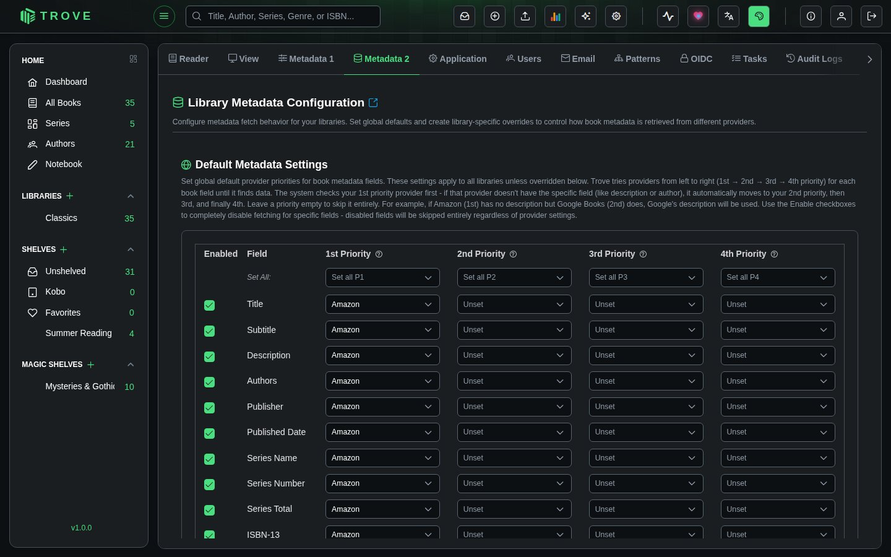

Library metadata
Configure how Trove fetches and applies book metadata from online providers. Set global defaults with per-field provider priorities, enable or disable specific fields, and create library-specific overrides for different collections.
Navigate to Settings > Metadata 2 to access this page. Requires the Manage Metadata Configuration permission.

How It Works
When Trove fetches metadata for a book, it checks your configuration to determine which providers to query and in what order. For each metadata field (title, author, description, etc.), you assign up to four providers in priority order:
- 1st Priority (P1): The provider Trove tries first
- 2nd Priority (P2): Used if P1 doesn't have data for that field
- 3rd Priority (P3): Used if P2 also lacks data
- 4th Priority (P4): Final fallback
This means different fields can pull from different providers. For example, you might prefer GoodReads for descriptions but Amazon for cover images.
Metadata Providers
Trove integrates with the following providers:
| Provider | Strengths |
|---|---|
| Amazon | High-quality covers, comprehensive catalog, ratings and reviews |
| Google Books | Detailed publisher descriptions, accurate ISBNs, broad coverage |
| GoodReads | Community ratings, excellent series data, comprehensive genres |
| Hardcover | Modern releases, moods and tags, community-driven data |
| Open Library | Open catalogue from the Internet Archive; strong on older books |
| Bookshelf | Book details from bookshelf.nz (needs an API token) |
| Comicvine | Specialized comic book and graphic novel metadata |
| Douban | Asian literature (Chinese, Japanese, Korean titles) |
| Lubimyczytac | Polish literature and book ratings |
| Ranobedb | Light novels and web novel metadata |
| Audible | Audiobook-specific metadata, narrator info, ratings |
Default Metadata Settings
The top section of the page configures the global defaults that apply to all libraries unless overridden.
Priority Grid
The grid shows all standard metadata fields as rows, with four priority columns. Each cell is a dropdown where you select a provider.
Standard fields (14):
| Field | What It Controls |
|---|---|
| Title | Book title |
| Subtitle | Book subtitle |
| Description | Synopsis or summary |
| Authors | Author names |
| Publisher | Publishing house |
| Published Date | Publication date |
| Series Name | Series the book belongs to |
| Series Number | Position within the series (supports decimals like 1.5) |
| Series Total | Total books in the series |
| ISBN-13 | 13-digit ISBN identifier |
| ISBN-10 | 10-digit ISBN identifier |
| Language | Book language |
| Genres | Categories and genres |
| Page Count | Number of pages |
Bulk Priority Setters
The "Set All" row at the top of each priority column lets you assign the same provider to all enabled fields at once. Select a provider from the dropdown to apply it across the board, or select "Clear All" to unset that priority for every field.
Use this to quickly establish a baseline, then fine-tune individual fields as needed.
Enabled/Disabled Fields
The Enabled checkbox on each row controls whether that field is fetched at all. Disabling a field skips it entirely during metadata fetching, regardless of provider assignments. Disabled rows appear grayed out.
Provider-Specific Fields
Below the priority grid, a separate section lists fields that are unique to specific providers. These fields don't use the priority system because they can only come from one source.
Simply check or uncheck each field to enable or disable it:
Amazon:
- Amazon ASIN, Amazon Rating, Amazon Review Count
Google:
- Google Books ID
GoodReads:
- Goodreads ID, Goodreads Rating, Goodreads Review Count
Hardcover:
- Hardcover ID, Hardcover Rating, Hardcover Review Count, Moods, Tags
Comicvine:
- Comicvine ID
Lubimyczytac:
- Lubimyczytac ID, Lubimyczytac Rating
Ranobedb:
- Ranobedb ID, Ranobedb Rating
Audible:
- Audible ID, Audible Rating, Audible Review Count
Fetch Options
The bottom bar provides four additional settings that control how fetched metadata is applied:
Replace Mode
| Mode | Description |
|---|---|
| Replace Missing Only (default) | Only fills in fields that are currently empty. Existing metadata is preserved. Safe for routine use. |
| Replace All | Overwrites all metadata fields with fetched values, even if data already exists. Use with caution. |
| Replace When Provided | Replaces a field only when the provider returns a value for it. Empty provider responses don't clear existing data. |
Update Covers
When checked, cover images are fetched and applied. When unchecked, existing covers are preserved and the Cover field is hidden from the priority grid.
Merge Genres
When checked, fetched genres are merged with existing ones (union). When unchecked, existing genres are replaced entirely by fetched genres.
Manual Review
When checked, fetched metadata is not applied automatically. Instead, it's queued for manual review where you can compare old vs. new values and approve or reject individual changes. Useful for important collections where you want full control.
Saving
- Save Default Settings: Validates and saves your configuration as the global default for all libraries
- Reset Form: Clears all provider selections back to "Unset", re-enables all fields, and resets options to defaults. Does not save.
Library-Specific Overrides
The bottom section of the page lets you override the default settings for individual libraries. This is powerful when different libraries need different provider priorities.
Use cases:
- Prefer Amazon for fiction but Google Books for technical books
- Use Comicvine as primary for a comics library
- Disable description fetching for a library where you've manually curated descriptions
- Use Audible as primary for an audiobook library
Each library is listed with a badge:
- Default Settings (green globe icon): Using the global defaults
- Custom Settings (green checkmark icon): Has a library-specific override
Click on a library to expand it and configure custom provider priorities, enabled fields, and fetch options. The configuration UI is identical to the default settings section. Any field left unconfigured falls back to the global default.
Sidecar Export & Import
Each library panel includes Export Sidecar and Import Sidecar buttons for bulk metadata file operations.
Export Sidecar
Writes the current metadata for every book in the library to .metadata.json files alongside the book files on disk. This is useful for:
- Backing up metadata before a major change
- Sharing metadata between Trove instances
- Preserving metadata independently from the database
Import Sidecar
Reads .metadata.json files from disk and applies them to the corresponding books in the library. Metadata is applied using the Replace When Provided mode, so only fields present in the sidecar file are updated.
Configuration Examples
General-Purpose Library
A balanced setup that works well for most fiction and non-fiction:
| Priority | Provider |
|---|---|
| P1 | GoodReads |
| P2 | |
| P3 | Amazon |
| P4 | Unset |
Enable all standard fields plus Goodreads ID/Rating and Amazon ASIN. Use "Replace Missing Only" with "Merge genres" checked.
Comics Library (Override)
Override for a comics-specific library:
| Priority | Provider |
|---|---|
| P1 | Comicvine |
| P2 | |
| P3 | Amazon |
| P4 | Unset |
Enable Comicvine ID. Disable series fields if your comics don't use them.
Audiobook Library (Override)
Override for an audiobook library:
| Priority | Provider |
|---|---|
| P1 | Audible |
| P2 | GoodReads |
| P3 | Amazon |
| P4 | Unset |
Enable Audible ID, Audible Rating, and Audible Review Count.
Polish Literature (Override)
Override for a Polish book collection:
| Priority | Provider |
|---|---|
| P1 | Lubimyczytac |
| P2 | GoodReads |
| P3 | |
| P4 | Unset |
Enable Lubimyczytac ID and Lubimyczytac Rating.
Notes
- All configuration changes are recorded in the Audit Log.
- Library overrides take full precedence. When a library has custom settings, the global defaults are not used as a fallback for individual fields within that configuration.
- The configuration is used by all metadata fetch operations: Auto Fetch, Custom Fetch, and the Refresh Metadata system task.
- Provider-specific fields (ratings, IDs, moods, tags) are only fetched when their parent provider is queried for at least one standard field.
- Disabling a provider in Settings > Metadata 1 removes it from all priority dropdowns. Re-enabling it does not restore previous priority assignments.